Biodiversity Disaster
A biodiversity disaster refers to a significant loss of species and habitats, leading to a reduction in biological diversity within a specific area or globally. This loss can be caused by various factors, including human activities and natural events, and it can have severe ecological, economic, and social impacts.
Key Characteristics of Biodiversity Disasters
Species Extinction
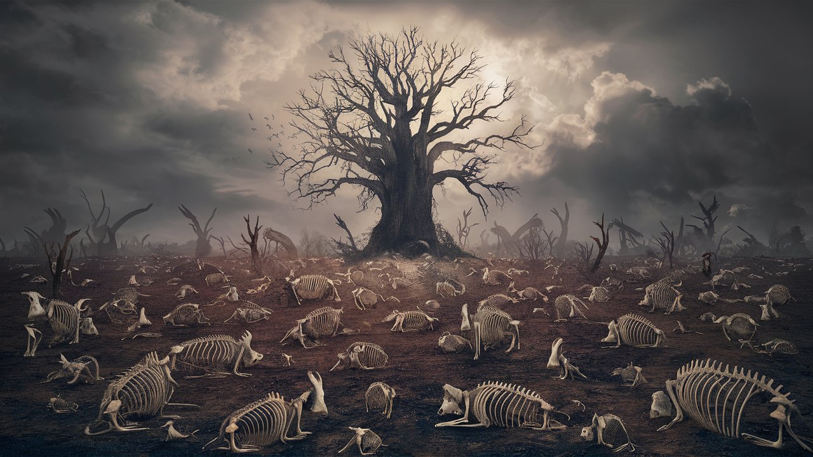Complete disappearance of species from Earth.
Habitat Destruction
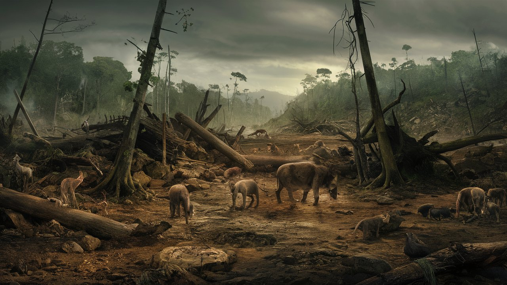Loss or degradation of natural habitats, making them unable to support the species that live there.
Ecosystem Imbalance
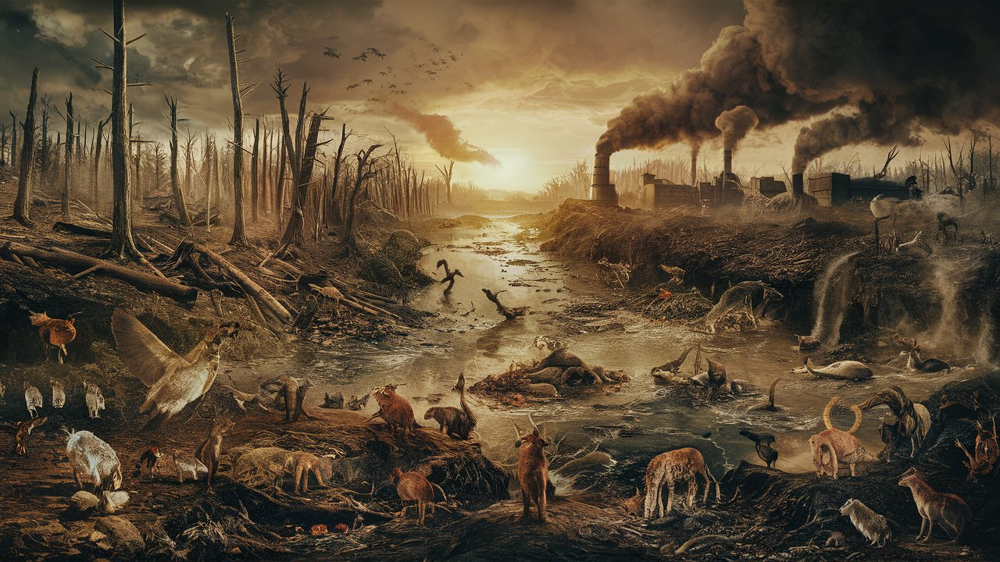Disruption of ecological interactions and processes, leading to a breakdown in ecosystem functions.
Notable Examples
Introduction of Rabbits in Australia
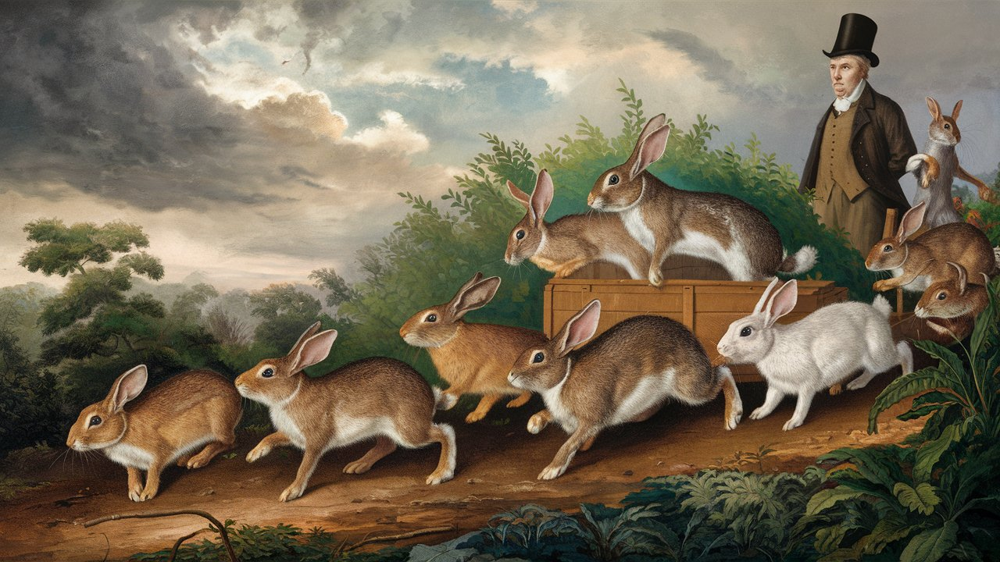Rabbits caused extensive damage to native flora and fauna.
Great Pacific Garbage Patch
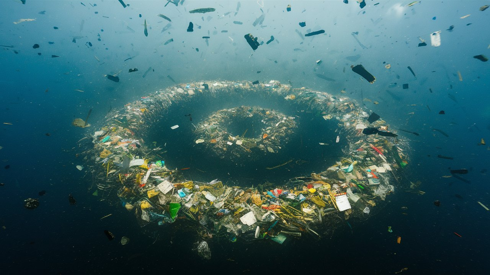A massive accumulation of plastic debris in the Pacific Ocean, harming marine life.
Causes
Habitat Destruction
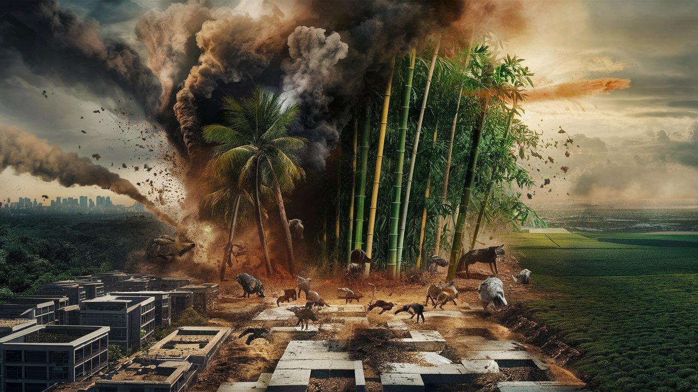Deforestation, urbanization, and agricultural expansion.
Pollution
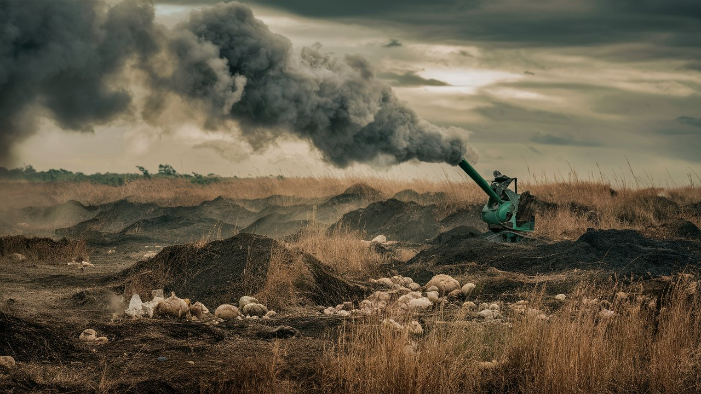Contamination of air, water, and soil by chemicals and waste.
Climate Change

Alterations in climate patterns affecting species and ecosystems.
Overexploitation
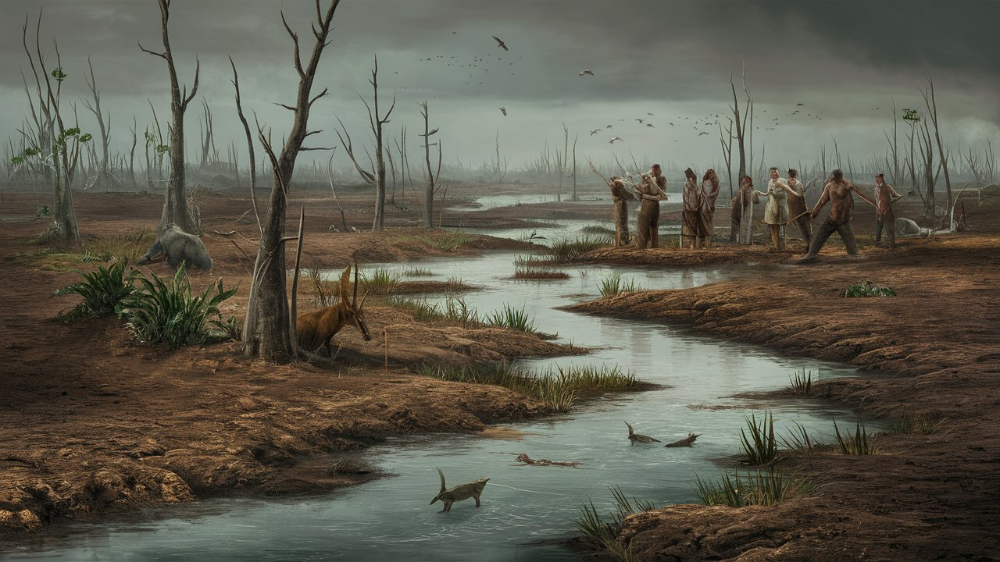Unsustainable hunting, fishing, and harvesting of resources.
Invasive Species
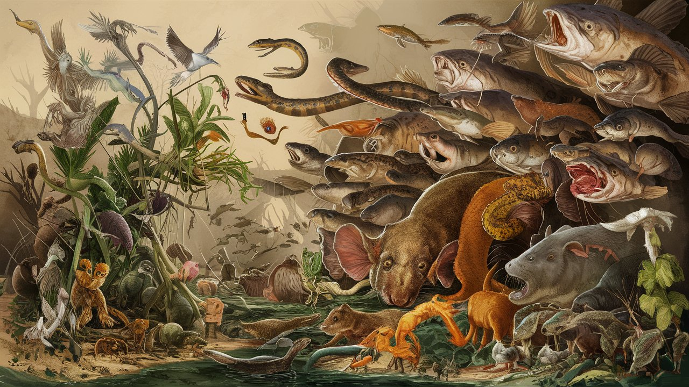Non-native species that outcompete or prey on native species.
Impacts
Ecosystems
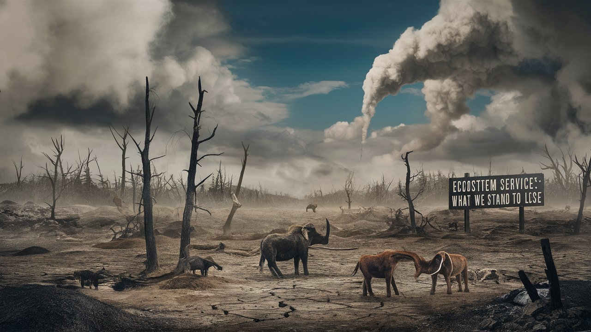Loss of biodiversity can lead to the collapse of ecosystems and loss of ecosystem services.
Human Health
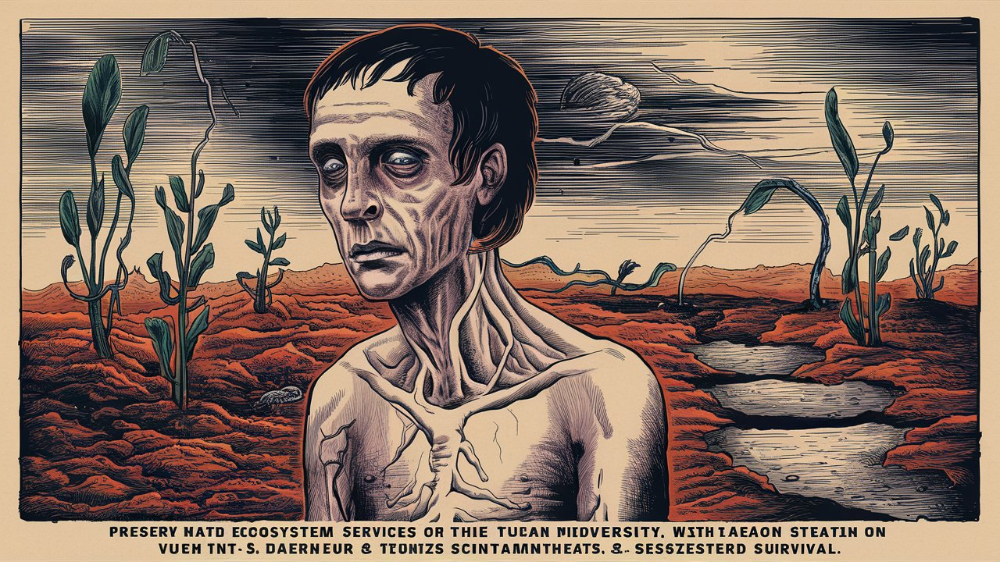Reduced biodiversity can affect ecosystem services that humans rely on, such as clean water and air.
Economy
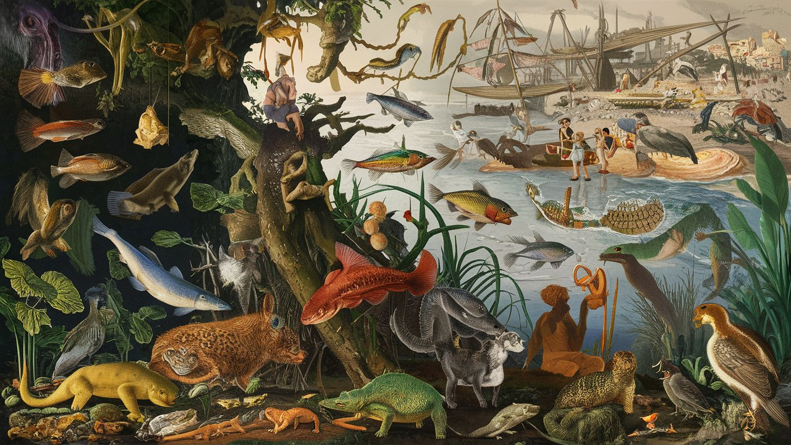Industries dependent on biodiversity, such as tourism and fisheries, can suffer.
Solutions
Habitat Protection
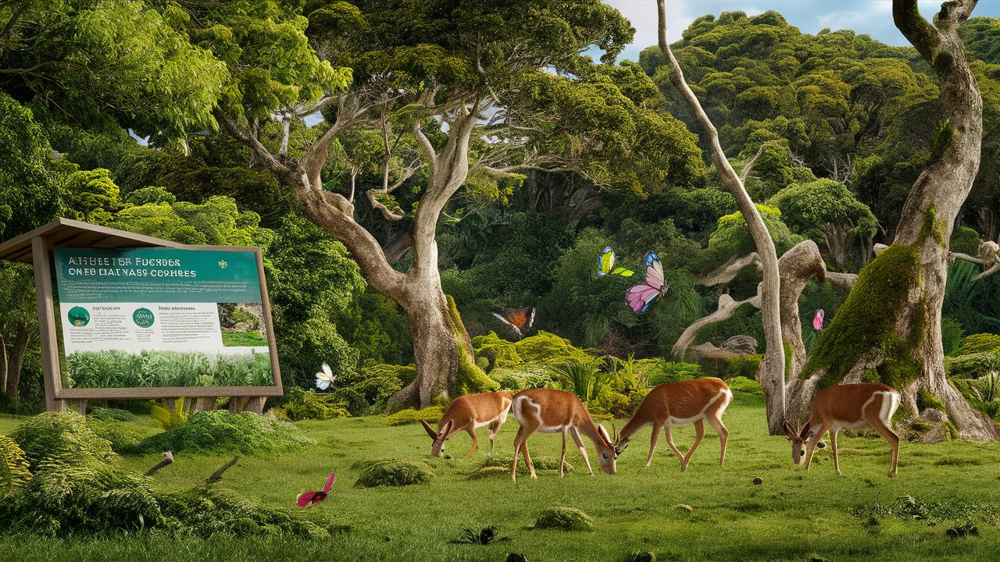Protecting and restoring natural habitats.
Conservation Efforts
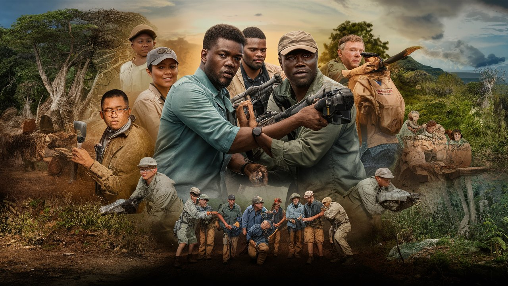Implementing conservation projects and enforcing anti-poaching laws.
Sustainable Practices
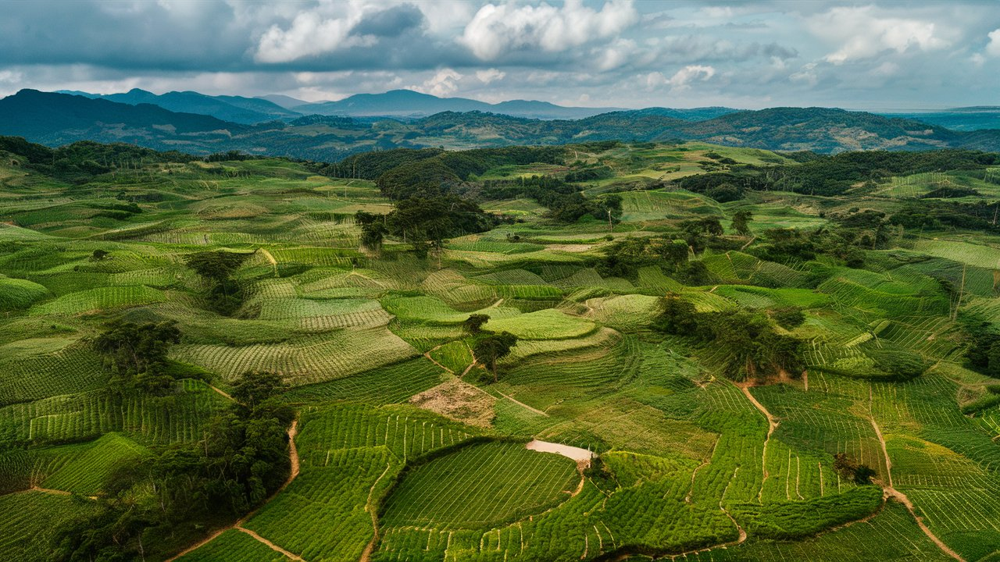Promoting sustainable land use, agriculture, and resource management.
Climate Action
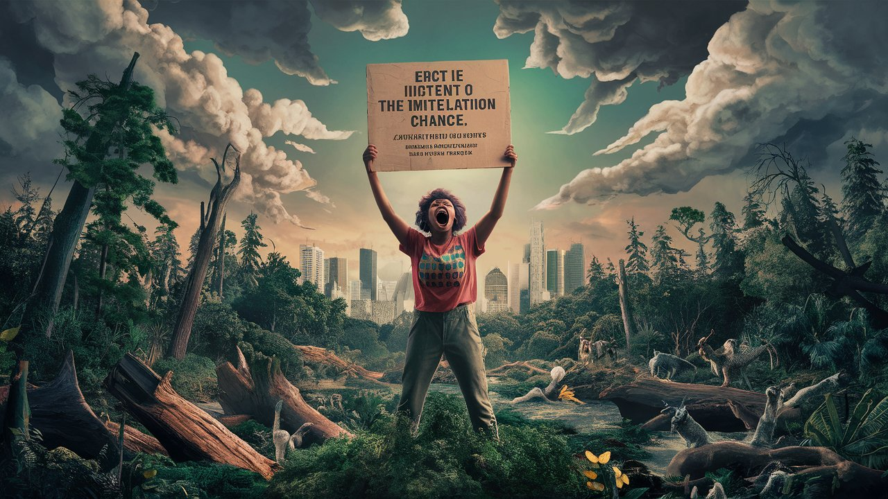Reducing greenhouse gas emissions and mitigating climate change impacts.
Education and Awareness
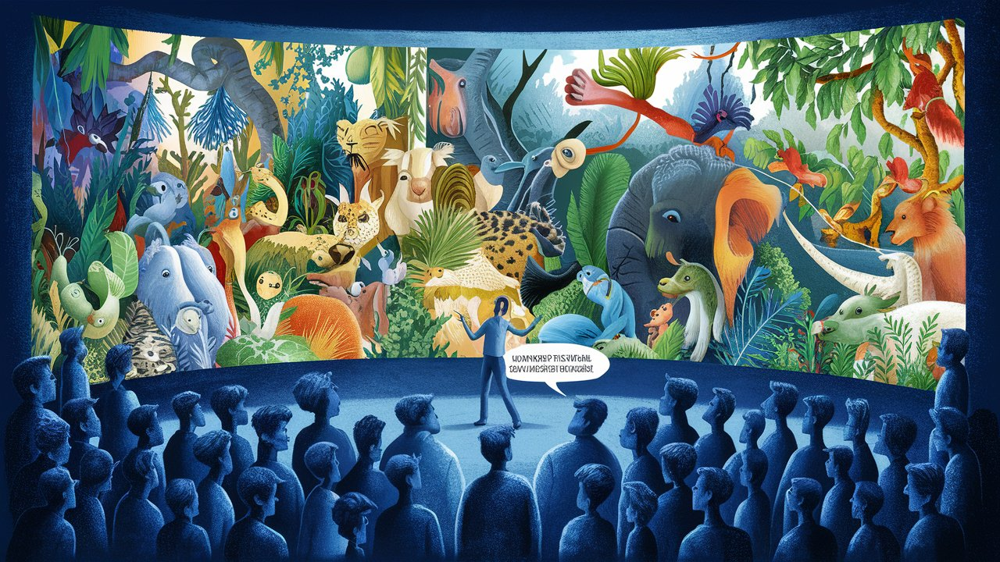Raising awareness about the importance of biodiversity and encouraging conservation efforts.